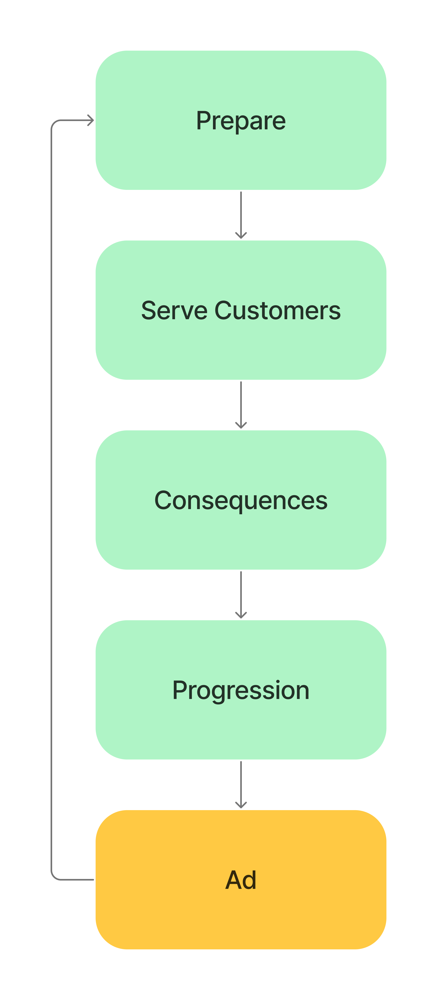

Project Overview
Role: Gameplay Designer • Systems Designer • Narrative Support
Genre: Slow-Burn Horror • Merchant Simulation • Mobile & PC
Shadow Market is a 3D atmospheric horror merchant-sim built around subtle tension, symbolic objects, and systemic consequences, a horror experience without jumpscares.
This project demonstrates my ability to design core gameplay systems, player progression, and emotion-driven mechanics inside a tight, mobile-friendly loop.
Core Gameplay Loop
Designed a night-based market cycle centered on:
Design Goals
- Deliver horror without jumpscares
- Keep the entire loop mobile-friendly
- Make every decision meaningful
- Build tension through subtle environmental changes
- Maintain a fair and non-predatory economy
- Ensure evergreen content and replay value
What This Project Shows About Me
- Gameplay & Systems Design Mastery
- Horror Tension Crafting
- Narrative Support & Micro-Storytelling
- Mobile UX & Economy Balancing
- Production-Aware Approach